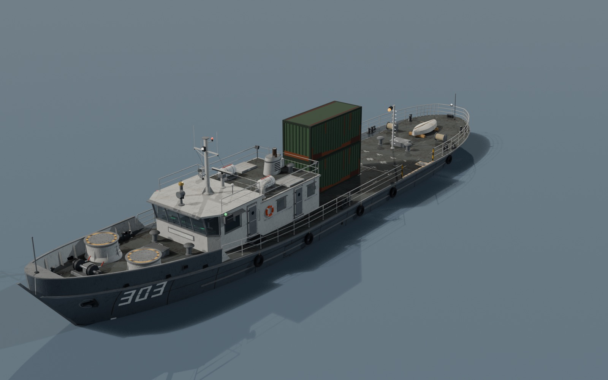
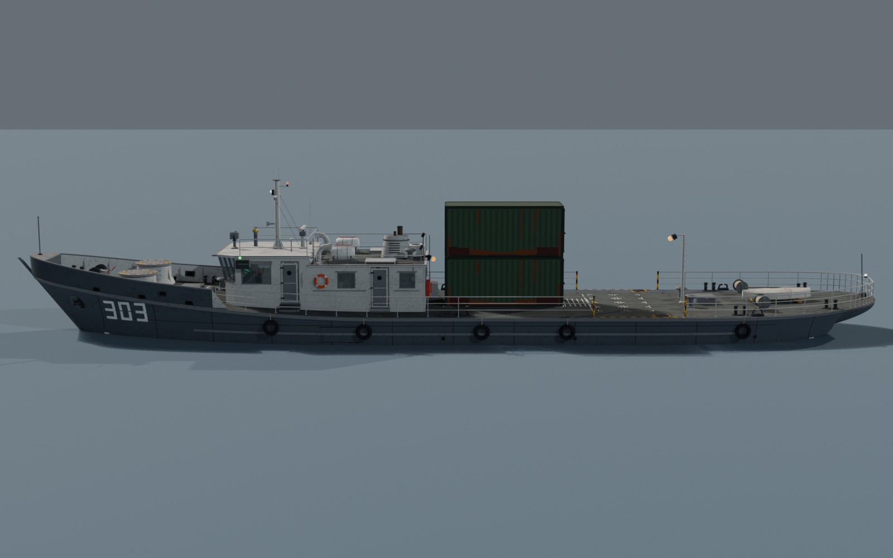
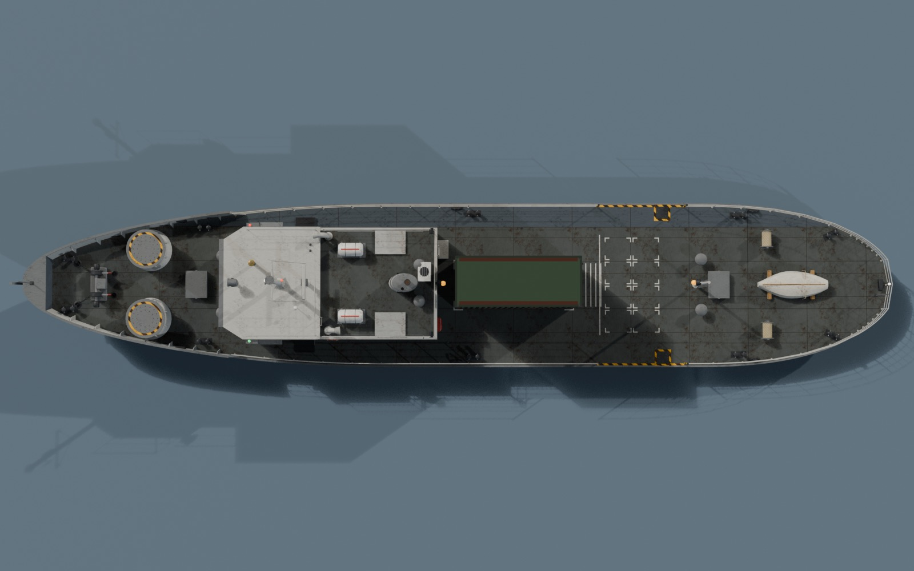
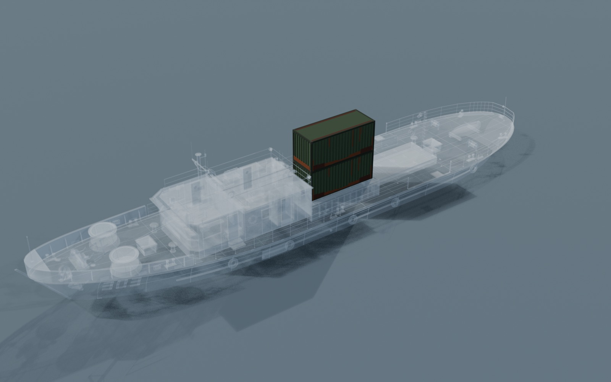

Runners · Player ships
Shade
Runners is in development. Details will change.
Final Approved 2026-11-26
Mid smuggler: two containers and eight pallets on deck; one container sits on the trap door of an 8-pallet hidden hold.








Her sheet
- Class
- Smuggler
- Level
- 2
- Size
- 44 m long, 8.5 m beam
- Containers on deck
- 2 × 20 ft, real; one sits on the trap door of the hidden hold
- Pallet places
- 8 on deck, in plain sight (ordinary cargo)
- Hidden pallets
- 8 (one container's worth), in the hidden hold in the hull
- Weapon mounts
- 2: 2 small
- Loot nets
- one boom each side. No scrap magnet
- Speed / hull
- 57 m/s, 200 HP
- Price
- 6,000 CR
How she works
- Smuggling: 8 pallets ride in the hidden hold in her hull. The way in is a trap door under one of her real containers: a crane lifts the container off, then works straight down through the door. Shut, nothing shows. High income, high risk.
- Honest cargo, in plain sight: 8 pallets on deck and 2 real 20 ft containers (16 pallets). That is 24 pallets of honest cargo against 8 hidden. Loaded by crane.
- Loot: sunk pirates leave pallets floating, each with a random load. A net boom on each side swings out over the water and scoops a pallet up as she drives past. It lands on one of her 8 pallet places, so a full deck takes no more. She has no magnet, so she cannot lift scrap.
- Fighting: 2 weapon mounts (2 small). The player buys and fits the guns; each one trains and fires on its own pad.
- Handling: 57 m/s top speed, 200 hull points.
Ideas for her
Proposals, not decided yet.
- Trap door: her containers are real, ordinary containers that carry cargo. One of them sits on a trap door in the deck. A crane lifts that container off, the trap door opens, and the hidden hold is below.
- Hidden hold size: 8 pallets, one container's worth, under the trap door, so every pallet is straight below the door and the crane can reach it.
- The trap door is the size of the container above it and looks like plain deck with ordinary container sockets at its corners.
- With the containers in place she looks like a small cargo boat carrying two boxes and a row of pallets.
- Everything smuggled is pallets, hidden in the hull. No smuggled goods ride in a container or in sight.
- The hidden hold is a real, hollow space in the hull, with clear sky over its opening so a crane can lower pallets in and lift them out.
- The way in is hidden and animated. When it is shut, nothing on deck gives it away: no handles, hinges or seams that an ordinary ship would not have.
Her story
Her story has not been written yet.
From the World Atlas
Mid smuggler: two containers and eight pallets on deck; one container sits on the trap door of an 8-pallet hidden hold.
Hidden pallets: 8 (one container's worth), in the hidden hold in the hull; Loot nets: one boom each side. No scrap magnet
World Atlas, Runners 2055: the ships